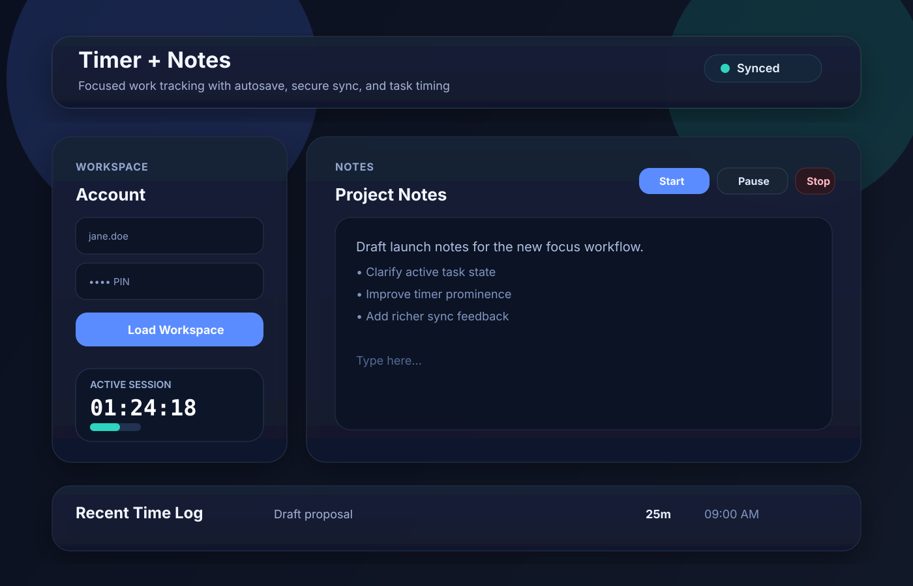
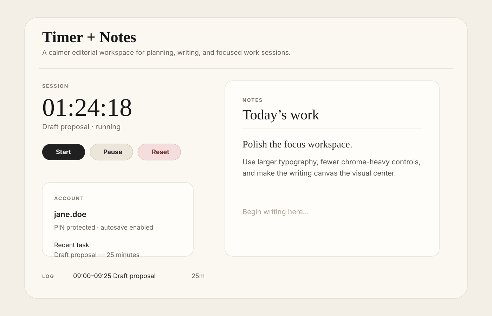
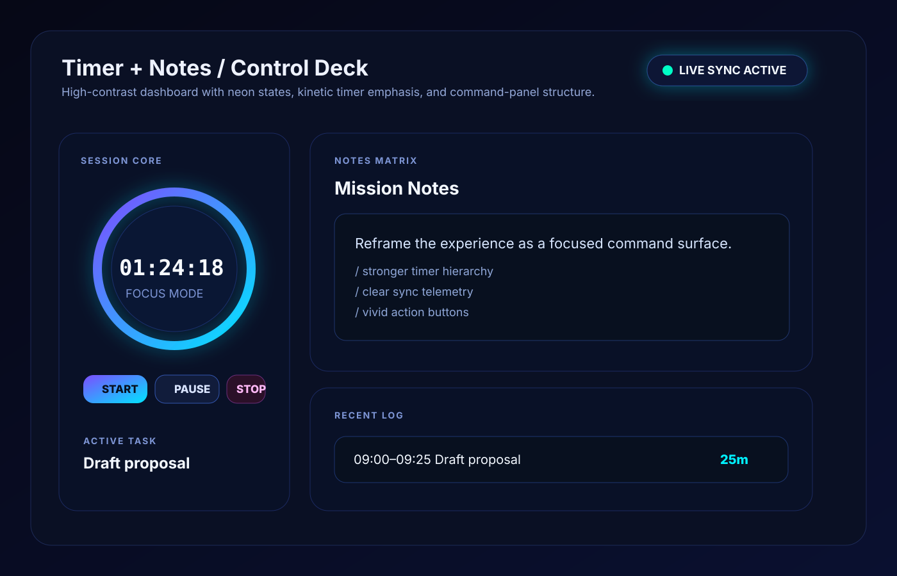

Three proposed visual directions for the FocusTime interface before implementation.
Balanced dashboard layout, glassy cards, calm blue/teal accents, and clear task hierarchy.

Warm paper-like workspace, elevated typography, and a writing-first visual focus.

High-contrast neon dashboard with command-center energy and strong timer emphasis.
